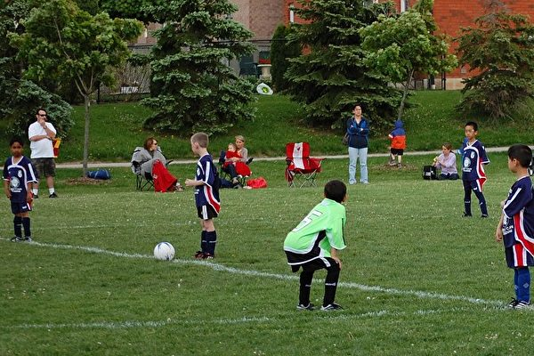

在高温下运动，专家建议，人们应该随时注意头晕、迷失方向和失去意识等迹象，这些都是中暑的征兆。（岳怡/） 【2024年08月06日讯】（记者季薇多伦多报导）在酷热的暑天，健身时如何保持身体凉爽？加拿大专家称，在炎热的户外进行运动时，应特别注意避暑。长时间暴露在酷热的环境中，人们可能会中暑。专家建议，人们应该随时注意头晕、迷失方向和失去意识等迹象，这些都是中暑的征兆。
运动前补充水分
布鲁克大学运动机能学系教授、资深研究员斯蒂芬‧张（Stephen Cheung）对《环球邮报》表示，“保持水分”是身体健康的最基本需求。张说，在运动前确保体内“水分处于正常水平”，将“让人们的心血管系统更好地帮助身体调节温度”。
虽然正常的水分水平因人而异，但张说，在高温下，运动之前一小时喝几杯水，以及在运动时喝水，可以让身体保持充足的水分。
免受阳光照射
防晒霜不仅可以保护皮肤免受癌症的侵害，还可以帮助调节体温。
张解释道：“如果皮肤晒伤，会影响血管及其向皮肤输送血液的能力，从而削弱人体出汗反应。”
穿宽松的衣服
多伦多联合健康（Unity Health）网路家庭医生萨曼莎·格林（Samantha Green）举例说，橄榄球运动员因为穿戴的装备较多，容易过热，因此他们是最容易中暑的运动员之一。
格林建议，在酷热的天气下运动时，人们一定要穿棉质等透气的衣服，戴上通风的帽子。
避开下午
不要在下午到户外锻炼。
下午时，太阳升至全日最高的位置，是最热的时候。张建议，在清晨或晚上凉爽的时候运动。
到大自然中运动
混凝土会形成“热岛”，使铺砌区域周围的温度升高。
为了保持凉爽并避免建筑环境中的高温热点，专家建议，在草地上或树荫下运动。
冷身活动
在运动后进行冷身活动，有助于更好地从酷热中恢复，保持身体健康。
格林建议，将水雾喷洒到自己身上，也可以把冷湿毛巾或冰袋敷在颈部、腋下和腹股沟等血管丰富的部位，快速帮助身体降温。
张补充道，在极端高温下运动后，寻找阴凉处，进入有空调的环境并喝冷水，可以有效帮助调节体温，让身体更快恢复到正常状态。
责任编辑：岳怡